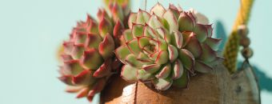

"A alegria é para o corpo humano o mesmo que o sol é para as plantas."
Jean Massillon
As suculentas podem ser cactos, mas nem sempre um cacto é uma suculenta. Esse é apenas um subtipo da família das suculentas.
Crassula Ovata Gollum. Conhecida como Orelha de Shrek
Echeveria Elegans (Bola de Neve Mexicana)
Conheça mais sobre nossas suculentas
PlantasNós da nectar plants somos apaixonados por essas suculentas, ao logo de nossa história tivemos oportunidade de trabalhar com diversas espécies.
Conheça mais sobre nossas suculentas
SobreSuculentas quase sempre são de origem desértica e preferem Consigam uma terra perfeita misturando o substrato para mudas com areia comum.
Encontre a janela que mais recebe sol na sua casa e deixe sua suculenta desfrutar de uma boa quantidade de luz natural.
Você não precisa umedecer a terra com frequência, mas quando for fazê-lo, adicione água até que o líquido escorra pelos os buracos no fundo do vaso.
O plástico limita o crescimento das raízes e dificulta a secagem da água.
Veja todas as nossas dicas
Dicas"A alegria é para o corpo humano o mesmo que o sol é para as plantas."
Jean Massillon